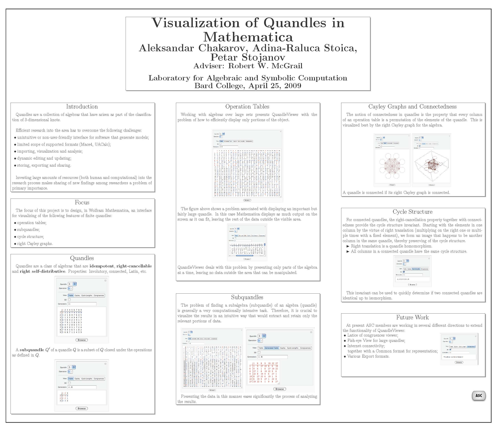

Laboratory for Algebraic and Symbolic Computation, 2008-2009 During the first two years of undergrad I worked in the Laboratory for Algebraic and Symbolic Computation (ASC) at Bard College, on applications related to the classification
of quandles (using Wolfram Mathematica). Quandles, which are a collection of algebras that have arisen as part of the classification of 3-dimensional knots. My most recent work in the lab consisted in improving a Mathematica-based GUI for viewing
quandles.
The poster
Visualizing Quandles in Mathematica was presented at the Bard College Senior Poster Session as well as at the 4th Annual Spuyten Duyvil
Undergraduate Mathematics Conference at SUNY New Paltz in 2009.
